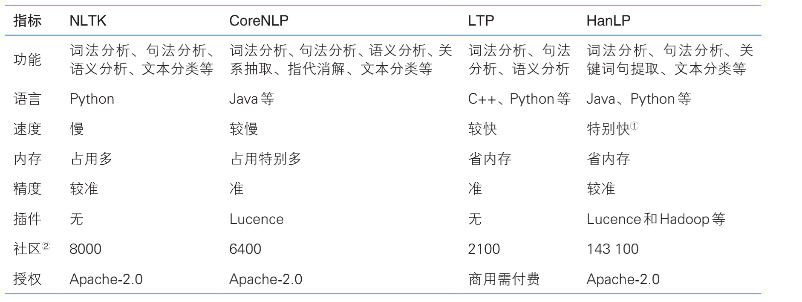

NLP 新手上路¶
自然语言处理 (Natural Language Processing，NLP)是一门融合了计算机科学、人工智能及语言学的交叉学科，它们的关系如下图所示。这门学科研究的是如何通过机器学习等技术，让计算机学会处理人类语言，乃至实现终极目标–理解人类语言或人工智能。
美国计算机科学家Bill Manaris在《计算机进展》( Advances in Computers)第47卷的《从人机交互的角度看自然语言处理》一文中曾经给 自然语言处理提出了如下的定义 :
“自然语言处理可以定义为研究在人与人交际中以及在人与计算机交际中的语言问题的一门学科。自然语言处理要研制表示语言能力和语言应用的模型，建立计算框架来实现这样的语言模型，提出相应的方法来不断地完善这样的语言模型，根据这样的语言模型设计各种实用系统，并探讨这些实用系统的评测技术。”
自然语言与编程语言的比较¶
| 比较 | 不同 | 例子 |
|---|---|---|
| **词汇量** | 自然语言中的词汇比编程语言中的关键词丰富，我们还可以随时创造各种类型的新词 | 蓝瘦、香菇 |
| **结构化** | 自然语言是非结构化的，而编程语言是结构化的 | |
| **歧义性** | 自然语言含有大量歧义，而编程语言是确定性的 | 这人真有意思:没意思 |
| **容错性** | 自然语言错误随处可见，而编程语言错误会导致编译不通过 | 的、地的用法错误 |
| **易变性** | 自然语言变化相对迅速嘈杂一些，而编程语言的变化要缓慢得多 | 新时代词汇 |
| **简略性** | 自然语言往往简洁、干练，而编程语言就要明确定义 | “老地方”不必指出 |
自然语言处理的层次¶
- 语音、图像和文本
自然语言处理系统的输入源一共有3个，即语音、图像与文本。语音和图像这两种形式一般经过识别后转化为文字，转化后就可以进行后续的NLP任务了。
- 中文分词、词性标注和命名实体识别
这3个任务都是围绕词语进行的分析，所以统称 词法分析 。词法分析的主要任务是将文本分隔为有意义的词语( 中文分词 )，确定每个词语的类别和浅层的歧义消除( 词性标注 )，并且识别出一些较长的专有名词( 命名实体识别 )。对中文而言，词法分析常常是后续高级任务的基础。
- 信息抽取
词法分析之后，文本已经呈现出部分结构化的趋势，根据分析出来的每个单词和附有自己词性及其他标签的数据，抽取出一部分有用的信息，关键词、专业术语等，也可以根据统计学信息抽取出更大颗粒度的文本。
- 文本分类与文本聚类
将文本拆分为一系列词语之后，就可以对文本进行分类和聚类操作，找出相类似的文本。
- 句法分析
词法分析只能得到零散的词汇信息，计算机不知道词语之间的关系。在一些问答系统中，需要得到句子的主谓宾结构，这就是句法分析得到的结果，如下图所示：
不仅是问答系统或搜索引擎，句法分析还经常应用有基于短语的机器翻译，给译文的词语重新排序。
- 语义分析与篇章分析
相较于句法分析，语义分析侧重语义而非语法。它包括 词义消歧 (确定一个词在语境中的含义，而不是简单的词性)、 语义角色标注 (标注句子中的谓语与其他成分的关系)乃至 语义依存分析 (分析句子中词语之间的语义关系)。
- 其他高级任务
自动问答、自动摘要、机器翻译
注意，一般认为信息检索(Information Retrieve，IR)是区别于自然语言处理的独立学科，IR的目标是查询信息，而NLP的目标是理解语言。
自然语言处理的流派¶
- 基于规则的专家系统
规则，指的是由专家手工制定的确定性流程。专家系统要求设计者对所处理的问题具备深入的理解，并且尽量以人力全面考虑所有可能的情况。它最大的弱点是难以拓展。当规则数量增加或者多个专家维护同一个系统时，就容易出现冲突。
- 基于统计的学习方法
人们使用统计方法让计算机自动学习语言。所谓“ 统计 ”，指的是在语料库上进行的统计。所谓“ 语料库 ”，指的是人工标注的结构化文本。
统计学习方法其实是机器学习的别称，而机器学习则是当代实现人工智能的主要途径。
- 历史
机器学习¶
- 什么是机器学习
美国工程院院士 Tom Mitchell 给过一个更明确的定义， 机器学习 指的是计算机通过某项任务的经验数据提高了在该项任务上的能力。
- 模型
模型是对现实问题的数学抽象，由一个假设函数以及一系列参数构成。以下就是最简单的模型公式：
其中，w 和 b 是函数的参数，而 x 是函数的自变量。不过模型并不包括具体的自变量x，因为自变量是由用户输入的。自变量 x 是一个特征向量，用来表示一个对象的特征。
-
特征
-
特征 指的是事物的特点转化的数值。
-
如何挑选特征，如何设计特征模板，这称作 特征工程 。特征越多，参数就越多；参数越多，模型就越复杂。
-
数据集
样本的集合在机器学习领域称作 数据集 ，在自然语言处理领域称作 语料库 。
- 监督学习
如果数据集附带标准答案 y，则此时的学习算法称作 监督学习 。学习一遍误差还不够小，需要反复学习、反复调整。此时的算法是一种迭代式的算法，每一遍学习称作 一次迭代 。这种在有标签的数据集上迭代学习的过程称作 训练 。
- 无监督学习
如果我们只给机器做题，却不告诉它参考答案，机器仍然可以学到知识吗？可以，此时的学习称作 无监督学习 ，而不含标准答案的数据集被称作 无标注的数据集 。无监督学习一般用于聚类和降维， 降维 指的是将样本点从高维空间变换成低维空间的过程。
-
其他类型的机器学习算法
-
半监督学习 ：如果我们训练多个模型，然后对同一个实例执行预测，会得到多个结果。如果这些结果多数一致，则可以将该实例和结果放到一起作为新的训练样本，用力啊扩充训练集。这样的算法被称为半监督学习。
- 强化学习 ：现实世界中的事物之间往往有很长的因果链：我们要正确地执行一系列彼此关联的决策，才能得到最终的成果。这类问题往往需要一边预测，一边根据环境的反馈规划下次决策。这类算法被称为强化学习。
语料库¶
- 中文分词语料库
中文分词语料库指的是，由人工正确切分的句子集合。以著名的1998年《人民日报》语料库为例：
先 有 通货膨胀 干扰，后 有 通货 紧缩 叫板。
- 词性标注语料库
它指的是切分并为每个词语制定一个词性的语料。依然以《人民日报》语料库为例：
迈向/v 充满/v 希望/n 的/u 新/a 世纪/n –/w 一九九八年/t 新年/t 讲话/n
这里每个单词后面用斜杠隔开的就是词性标签。
- 命名实体识别语料库
这种语料库人工标注了文本内部制作者关心的实体名词以及实体类别。比如《人民日报》语料库中-共含有人名、地名和机构名3种命名实体:
萨哈夫/nr 说/v ,/w 伊拉克/ns 将/d 同/p [联合国/nt 销毁/v 伊拉克/ns 大规模/b 杀伤性/n 武器/n 特别/a 委员会/n] /nt 继续/v 保持/v 合作/v 。/w
这个句子中的加粗词语分别是人名、地名和机构名。中括号括起来的是复合词，我们可以观察到:有时候机构名和地名复合起来会构成更长的机构名，这种构词法上的嵌套现象增加了命名实体识别的难度。
- 句法分析语料库
汉语中常用的句法分析语料库有CTB(Chinese Treebank，中文树库)，其中一个句子可视化后如下图所示：
中文单词上面的英文标签标示词性，而箭头表示有语法联系的两个单词，具体是何种联系由箭头上的标签标示。
- 文本分类语料库
它指的是人工标注了所属分类的文章构成的语料库。
- 语料库的建设
语料库建设指的是构建一份语料库的过程，分为规范制定、人员培训与人工标注这三个阶段。针对不同类型的任务，人们开发出许多标注软件，其中比较成熟的一款是brat，它支持词性标注、命名实体识别和句法分析等任务。
开源工具¶
- 主流NLP工具比较

另外，也研究过其他开源项目的原理，借鉴了其中优秀的设计。但毕竟还是自己写的代码讲得最清楚，所以综合以上各种考虑，最后选取了 HanLP作为本书的实现 。
- Python接口
HanLP 的 Python 接口由 pyhanlp 包提供，其安装只需一句命令：
1 | |
总结¶
本章给出了人工智能、机器学习与自然语言处理的宏观缩略图与发展时间线。机器学习是人工智能的子集，而自然语言处理则是人工智能与语言学、计算机科学的交集。这个交集虽然小，它的难度却很大。为了实现理解自然语言这个宏伟目标，人们尝试了规则系统，并最终发展到基于大规模语料库的统计学习系统。
在接下来的章节中，就让我们按照这种由易到难的发展规律去解决第一个NLP问题一中文分词。我们将先从规则系统人手，介绍一些快而不准的算法，然后逐步进化到更加准确的统计模型。